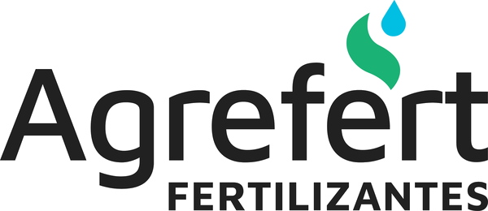
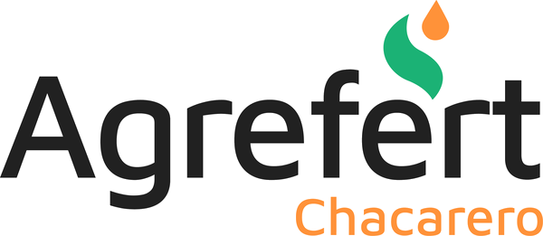
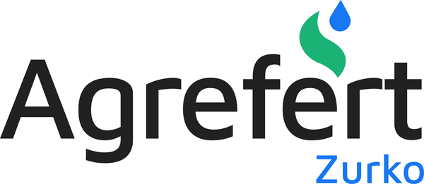
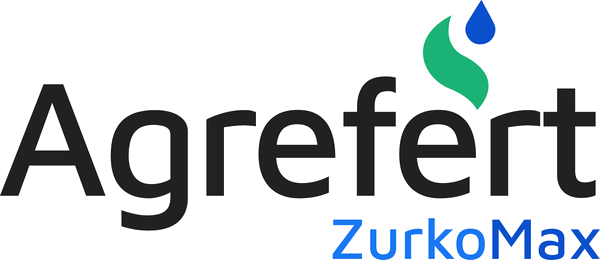
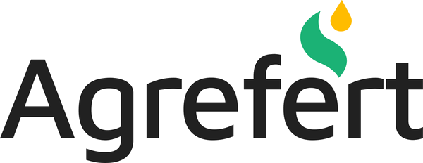

Cuatro lineas de productos para cubrir cada necesidad del productor
| Producto | Grado Tecnico | Uso Principal |
|---|---|---|
| Urea Perlada / Granulada | 46-0-0 | Trigo, maiz, soja, girasol — alta concentracion de nitrogeno |
| Sulfato de Amonio | 21-0-0-24S | Maiz, girasol, trigo — nitrogeno + azufre |
| Sulfato de Calcio | 0-0-0-18S-30Ca | Soja, girasol — corrector de acidez, calcio y azufre |
| MAP (Fosfato Monoamonico) | 11-52-0 | Trigo, maiz, girasol — fosfatado de alta solubilidad |
| Cloruro de Potasio | 0-0-60 | Maiz, girasol — potasio para resistencia al estres |
| Producto | Grado Tecnico | Uso Principal |
|---|---|---|
| Zurko NS ⭐ | 27-0-0-3S | Trigo, maiz — liquido NS, sin volatilizacion, relacion 9:1, pH neutro. No produce fitotoxicidad hasta 700 L/ha |
| Zurko Max | 27-0-0-3S-0,05Zn | Maiz — NS + zinc quelatado grado alimenticio (8-10x mas eficiente que sales) |
| Zurko Foliar | 20% N | Trigo, soja — nutricion foliar en estres |
| Zurko Foliar Max | 20% N + 0,05% Zn | Trigo, soja — foliar con zinc quelatado |
| Zurko Foliar Max Bio | 20% N + 0,05% Zn + bacterias | Soja, maiz — foliar con bacterias solubilizadoras de fosforo (Bactools) |
| Producto | Grado Tecnico | Uso Principal |
|---|---|---|
| ANSUL | 30-0-0-8S | Maiz, trigo — 100% N nitrico y amoniacal (sin ureico), minima volatilizacion. Para fertirriego |
| ANSCA | 28-0-0-4S-5Ca | Maiz, trigo — nitrogeno nitrico/amoniacal + azufre + calcio. Se puede volear |
| Urea Azufrada | 41-0-0-5S | Trigo — perfil proteico del grano |
| Urea S Reforzada | 40-0-0-3S-4Ca | Trigo, girasol — nitrogeno, azufre y calcio |
| Nitro C | 28-0-0-4S-5Ca | Maiz — nitrogeno, azufre y calcio |
| Nitro C Mix | 13,5-0-24-2S-3Ca-18Cl | Soja — equilibrio nutricional completo con potasio |
| NPS | 13-40-0-6S | Trigo, girasol — arranque de ciclo |
| NPS MAX | 13-40-0-6S + 0,05Zn | Maiz — eficiencia de fertilizacion con zinc |
| NPSCa | 8,25-39-0-4,5S-7,5Ca | Maiz, trigo — fosforo, azufre y calcio |
| Mezcla Quimica 8-40 | 8-40-0-5S-8Ca | Superadora de la 7-40 fisica. Todos los nutrientes en cada granulo, sin polvo |
| Producto | Estado | Detalle |
|---|---|---|
| B4 (Consorcio bacteriano) | Registrado ARG | Bioestimulo anti-estres + ISR. Validado en trigo, maiz, soja. Foliar 1 L/ha |
| BSP (Solubilizadoras de P) | Registrado ARG | Bacterias solubilizadoras de fosforo. Produccion 2.000 L |
| BSN (Probiotico Natto) | En tramite | Probiotico animal (Bacillus subtilis). Ensayos con FCV-UNL en terneros |
| Zurko Bio | Comercial | 90% Zurko + 10% B4: co-nutricion + bioestimulacion. ROI +5% maiz, +2-6% soja |
Unidad de biotecnologia aplicada a la agricultura sustentable
Obra civil finalizada. Sistema de fermentacion, esterilizacion y envasado operativo. Validaciones CIP/SIP y UHT completadas. Servicios: caldera, torre de enfriamiento, chiller, osmosis inversa y automatizacion. Escalado exitoso de laboratorio a planta.
Eficacia validada en trigo, maiz, soja (semilla y foliar). Expansion a papa, vid, algodon, tomate, garbanzo, arveja y mani. Protocolos de compatibilidad con fertilizantes. Formulaciones para aplicacion aerea (drones). Ensayos de probioticos animales con ANR $50.000.000 y FCV-UNL.
Ferias: Ecuador, Peru, Brasil (Agritech Sao Paulo). Ensayos: cacao, cafe, banano, maiz. Relacion con Multivet (Peru) para palta, arandanos, maiz. Avance en registros internacionales (Uruguay). Productos B4 y BSP registrados en Argentina.
Guidelines visuales, paleta cromatica, tipografia y logos oficiales
Nuestro isologo combina una hoja (nutricion vegetal) con una gota (fertilizantes liquidos), representando la esencia de Agrefert.





La marca utiliza Maven Pro como tipografia principal. Para textos extensos se recomienda Proxima Nova Regular.